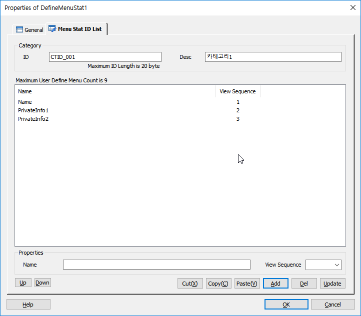

메뉴 통계에서 메뉴별 최대 9개 까지의 사용자 통계를 추가 할 수 있는데 여기서 정의 되는 통계 이름은 시나리오에서 사용되는 값은 아니고, 참조되는 값으로 최대 9개 까지 정의 할 수 있습니다. 여기에 정의된 이름은 SWAT에서 통계를 표현할 때 이름으로 사용됩니다.
ICON

PROPERTIES
 Ment Stat ID List
Ment Stat ID List

List Control
Name : 사용자 통계 이름입니다.(SWAT에서 활용됩니다.)
View Sequence : 사용자 통계 화면 출력시 순서를 설정합니다.(통계항목 추가 시 입력 값이 없으면 자동으로 순서값이 설정됩니다)
Up Button : 리스트에서 선택한 아이템을 위로 이동합니다.
Up Button : 리스트에서 선택한 아이템을 아래로 이동합니다.
Cut(X) Button : 선택한 리스트를 잘라냅니다.(Ctrl+X)
Copy(C) Button : 선택한 리스트의 내용을 복사 합니다.(Ctrl+C)
Paste(V) Button : 복사한 리스트의 내용을 붙여넣기 합니다.(Ctrl+V)
Add Button : Menu Stat Name을 추가합니다.
Del Button : Menu Stat Name을 리스트에서 제거 합니다.
Update Button : 선택한 Menu Stat Name을 갱신 합니다.
RELATED